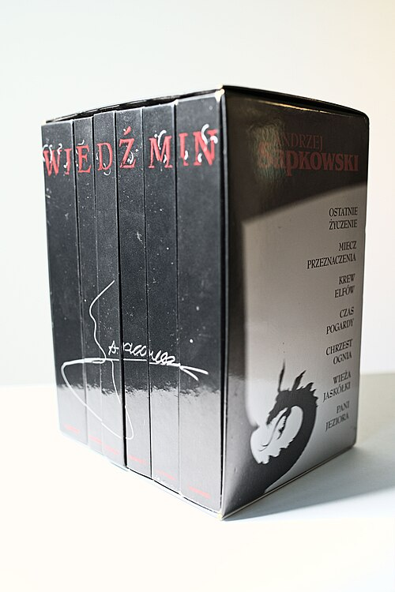
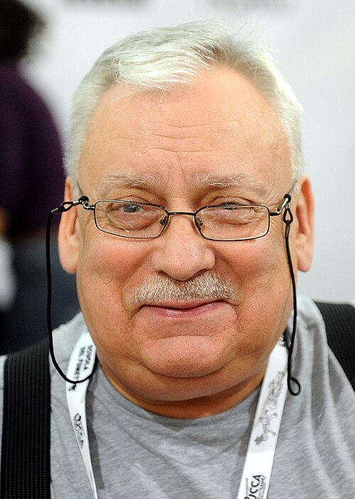
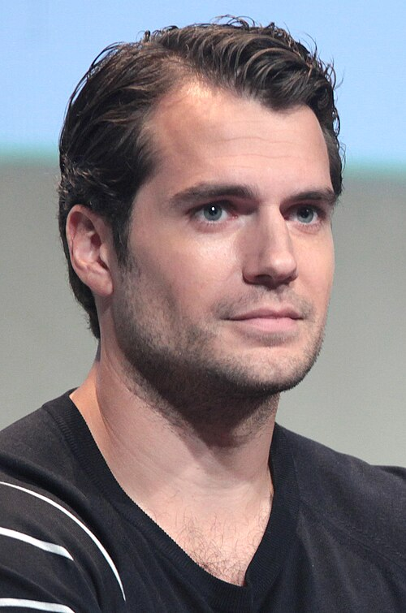
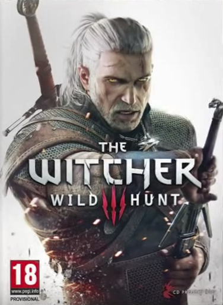

The Witcher

The Witcher (Polish: Wiedźmin, pronounced [ˈvjɛd͡ʑmin]) is a series of nine fantasy novels and 15 short stories by Polish author Andrzej Sapkowski. The series revolves around the eponymous witcher, Geralt of Rivia. Witchers are monster hunters given superhuman abilities for the purpose of killing dangerous creatures. The Witcher began with a titular 1986 short story that Sapkowski entered into a competition held by Fantastyka magazine, marking his debut as an author. Due to reader demand, Sapkowski wrote 14 more stories before starting a series of novels in 1994. Known as The Witcher Saga, he wrote one book a year until the fifth and final installment in 1999. A standalone prequel novel, Season of Storms, was published in 2013. Another prequel, Crossroads of Ravens, was published in 2024.
The books have been described as having a cult following in Poland and throughout Central and Eastern Europe. They have been translated into 37 languages and sold over 15 million copies worldwide as of July 2020. They have also been adapted into a film (The Hexer), two television series (The Hexer and The Witcher), a video game series, and a series of comic books. The video games in particular have been very successful, with more than 90 million copies sold as of September 2026.[1]
Overview
| No. | English title (original Polish title) | Pages | Release | Series | ||
|---|---|---|---|---|---|---|
| Polish | English | Polish | English | |||
| The Witcher (Wiedźmin) | 235 | – | 1990 | – | Short story collections | |
| 1 | The Last Wish (Ostatnie życzenie) | 286 | 288 | 1993 | 2007 | Short story collections |
| 2 | Sword of Destiny (Miecz Przeznaczenia) | 343 | 384 | 1992 | 2015 | Short story collections |
| 3 | Blood of Elves (Krew elfów) | 295 | 320 | 1994 | 2008 | The Witcher Saga |
| 4 | Time of Contempt (Czas pogardy) | 319 | 331 | 1995 | 2013 | The Witcher Saga |
| 5 | Baptism of Fire (Chrzest ognia) | 336 | 343 | 1996 | 2014 | The Witcher Saga |
| 6 | The Tower of the Swallow (Wieża Jaskółki) | 428 | 436 | 1997 | 2016 | The Witcher Saga |
| 7 | The Lady of the Lake (Pani Jeziora) | 520 | 531 | 1999 | 2017 | The Witcher Saga |
| 8 | Season of Storms (Sezon burz) | 404 | 384 | 2013 | 2018 | Prequel novels |
| 9 | Crossroads of Ravens (Rozdroże kruków) | 292 | 400 | 2024 | 2025 | Prequel novels |
The Last Wish contains four of the five stories in The Witcher, in addition to three other stories. The fifth story, "A Road with No Return", is not in the book.
Production
Short Stories

In 1985, Andrzej Sapkowski was a 38-year-old traveling fur salesman with an economics degree and a love of fantasy literature. He decided to enter a short story competition, limited to 30 pages, held by Polish science fiction and fantasy magazine Fantastyka.[14] He did so at the urging of his son Krzysztof, who was an avid reader of the magazine.[15] Sapkowski submitted ""The Witcher" [pl]" (1986), which was conceived as a retelling of a Polish fairy tale where a princess turned into a monster as punishment for the incest of her parents.[16] He had to wait about a year for the results of the contest, and came in third place.[14] Sapkowski felt that his work was the best in the competition, but the jurors relegated it to third because fantasy was considered to be for children at the time in Poland.[14] However, reaction from readers was overwhelmingly positive and Sapkowski wrote more stories, about one or two a year, in response to their demand.[14]
He based "A Question of Price" (and later "Sword of Destiny") on the universally known fairy tale in which a monster or sorcerer saves somebody's life and then demands payment.[16] The first four stories dealing with the witcher Geralt of Rivia were collected into a 1990 short story collection titled The Witcher — now out of print — by publisher Reporter.[17] It includes 1988's "A Road with No Return" ("Droga, z której się nie wraca"), which is set before The Witcher stories and features Geralt's mother-to-be.[17]
After what he called a chance meeting, Sapkowski made a deal in 1990 with SuperNowa to publish the series.[16] They released the second short story collection, Sword of Destiny, in 1992. The Last Wish was published by SuperNowa in 1993 to replace The Witcher as the first book, and includes all of its stories except "A Road with No Return" (the only story without Geralt).[17] Although new short stories were also added to The Last Wish, they chronologically take place before those in Sword of Destiny.
"Something Ends, Something Begins" ("Coś się kończy, coś się zaczyna") is an alternate ending to The Witcher Saga about Geralt and Yennefer's wedding that was written in 1992 as a wedding gift for Sapkowski's friends. It and "A Road with No Return" are included in some Polish editions of The Last Wish or Sword of Destiny.
The Witcher Saga and prequels
With the positive reader reception to his short stories, Sapkowski decided to write a fantasy saga.[14] He said that Polish publishers at the time believed only Anglo-Saxon fantasy authors were worth publishing and that Polish writers of the genre were too risky. SuperNowa were the only publisher willing to take the risk, and "Now everybody envies" them.[16] For the saga, the author expanded on the story he used for "A Question of Price" and "Sword of Destiny".[16] Blood of Elves, the first novel in The Witcher Saga, was published in 1994.[14] The story focuses on Geralt of Rivia and Ciri, who are linked by destiny. Ciri, princess of a recently conquered country and a pawn of international politics, becomes a witcher-in-training. Geralt is drawn into a whirlwind of events in his attempts to protect her.
Three more novels quickly followed at a pace of one a year; Time of Contempt (1995), Baptism of Fire (1996), and The Tower of the Swallow (1997). The fifth and final installment, The Lady of the Lake, was published in 1999.
After 14 years, Sapkowski released Season of Storms in 2013. Set between short stories included in The Last Wish, it is a standalone prequel to The Witcher Saga.[18] In 2020, Sapkowski stated that he had "some plans" for a new entry in The Witcher, but "My future plans are vague, nothing is fixed yet".[19] In 2024, the ninth installment of the series, Crossroads of Ravens, was published in Poland.[12] The book is a prequel to both the Witcher Saga and the short stories and describes Geralt as a young and inexperienced witcher shortly after completing his training in Kaer Morhen.[20]
Non-Witcher anthologies
Coś się kończy, coś się zaczyna [pl] (Something Ends, Something Begins) is a 2000 collection of short stories by Sapkowski, including two from The Witcher: "A Road with No Return" and "Something Ends, Something Begins".[17] That collection was republished in 2012, with two additional stories (not related to The Witcher universe), as Maladie i inne opowiadania (Maladie and Other Stories).[21]
Chosen by Fate: Zajdel Award Winner Anthology is a 2000 English anthology by SuperNowa, in cooperation with the Silesian Club of Fantastika, that includes a translation by Agnieszka Fulińska of "The Witcher [pl]" short story entitled "The Hexer".[22] 2010's A Polish Book of Monsters is an English anthology edited and translated by Michael Kandel that includes a translation of "The Witcher" entitled "Spellmaker".[23] Maladie and Other Stories (not to be confused with the above Polish book of the same name) is a 2014 English e-book sampler with translations of "The Witcher", "The Edge of the World", and the first chapters of Blood of Elves and Baptism of Fire.
Spin-offs
With Sapkowski's permission, the Polish publishing house Solaris published a collection of eight short stories entitled Opowieści ze świata Wiedźmina [pl] (Tales from the World of The Witcher). Written by Russian and Ukrainian fantasy writers (including Andrei Belyanin and Vladimir Vasilyev), they are set in the world of The Witcher and feature its characters;[24] Vasilyev story is part of his The Witcher of Grand Kiev universe.[25] Szpony i kły (Claws and Fangs), a similar collection of eleven short stories by authors chosen through a 2016 competition by the Polish magazine Nowa Fantastyka, was published in 2017 by SuperNowa.[26][27][28]
Setting
When he first created The Witcher, Sapkowski had not yet conceived of the background of the series' world. "I began with short stories; you don't create universes in short stories, there is—literally and metaphorically—no place for them". But when he switched to writing full novels, "the necessity of some coherent background became imminent. And slowly, step by step, something resembling a universe started to emerge. But it's only in the background, so it plays a secondary role in the story".[29] Although admitting to using Slavic mythology often due to it being very rich and abundant, Sapkowski said he does not have any preferred mythologies, folklores or bestiaries that he draws on for monsters in The Witcher: "The story dictates the necessity. And, mostly, I put aside existing mythologies and invent something myself".[19] He said that the monsters in the series can be put into one of three categories. First, those that already "exist" with established names, appearances, habits and habitats, such as dragons. Second are those that he invents, but gives names that can be found in nature, mostly insects, because they are "horrible and scary." Third are those that are completely original creations, only some of which are named, because, "When it has no importance as far as the storyline is concerned whatsoever, why bother?"[16]
Sapkowski has said that he personally abhors politics and considers his books to be politically neutral.[19]
Background
The stories are set on an unnamed continent,[30] which was settled several thousand years earlier by elves from overseas. When they arrived, the elves encountered gnomes and dwarves. After a war between the elves and dwarves, the dwarves retreated into the mountains, and the elves settled in the plains and forests. Human colonists arrived about five hundred years before the events in the stories, igniting a series of wars. The humans were victorious and became dominant; the non-human races, now considered second-class citizens, often live in small ghettos within human settlements. Those not confined to the ghettos live in wilderness regions that humans have not yet explored or settled. Other races on the Continent are halflings and dryads; werewolves and vampires appeared after a magical event known as the Conjunction of the Spheres.
During the centuries preceding the stories, most of the Continent's southern regions have been taken over by the Nilfgaard Empire; the north belongs to the fragmented Northern Kingdoms. The Witcher Saga takes place in the aftermath of the first major war between the Nilfgaard Empire and the Northern Kingdoms, with a second war beginning in the middle of the series.
Major characters
Further information: List of characters in The Witcher series
- Geralt of Rivia (Geralt z Rivii), also known as Gwynbleidd (Elder Speech: "White Wolf") and the "Butcher of Blaviken",[31] is the protagonist of the series and its adaptations, a witcher who travels the Continent and makes a living hunting monsters that plague the land. He is linked to Ciri by destiny. Kacper Pobłocki argues that he embodies the "neo-liberal anti-politics" spirit of the Polish popular culture of the 1990s.[32] Geralt has been played by Michał Żebrowski in the Polish shows and movies and by Henry Cavill in seasons 1–3 of the Netflix series The Witcher; from season 4 on, he is portrayed by Liam Hemsworth.[33]
- Cirilla Fiona Elen Riannon, also known as "Ciri" (from the name Zireael in Elder Speech, meaning 'swallow'; Jaskółka, in Polish), the "Lion Cub of Cintra", "Child of the Elder Blood", "Falka", and the "Lady of Time and Space". Cirilla is the princess of Cintra, daughter of Pavetta and Duny (also known as the "Urcheon of Erlenwald") and granddaughter of Queen Calanthe. She is also Geralt's destiny and adopted daughter, as well as the focus of much of the plot. Ciri is a descendant of Lara Dorren and possesses Elder blood, granting her the ability to cross space and time. Ciri has ashen-grey hair and emerald-green eyes, a trait that runs in her family.[citation needed] In the 2002 film and TV series, she was played by Marta Bitner; she was played by Freya Allan in the Netflix series.[34]
- Yennefer of Vengerberg (Yennefer z Vengerbergu) first appeared in the collection of short stories, The Last Wish, featuring in the short story of the same name. She is a powerful sorceress and a mother-figure to Ciri, and she becomes Geralt's lover. As an avid reader of fantasy, Sapkowski said he was sometimes bored and disgusted with stories in which the hero could easily have sex with any woman he wished; as such, he created Yennefer to "complicate things a little" as a woman character who refuses to be a fantasy cliché.[16] In the Polish 2002 film and TV series, she was played by Grażyna Wolszczak; she was played by Anya Chalotra in the Netflix series.
- Dandelion (Jaskier) is a poet, minstrel, and bard and Geralt's best friend. The Polish word jaskier refers to the buttercup flower (Ranunculus). Some of his more famous ballads were about the relationship between Geralt and Yennefer. He accompanies Geralt in many short stories and ends up joining his hansa while searching for Ciri.[citation needed] He is played by Joey Batey in The Witcher TV series.[35] In the 2001 Polish film Wiedźmin, he was played by Zbigniew Zamachowski.[36]
- Triss Merigold is a sorceress and a friend of Geralt and Yennefer. She took care of Ciri for some time and is like an older sister to her. She was a member of the Lodge of Sorceresses. Triss is in love with Geralt. The image of Triss Merigold from The Witcher 2: Assassins of Kings appeared as the cover girl in the Polish edition of Playboy in May 2011.[37] She also appeared in a live model calendar for the game in Russia.[38]

Geography
Although no map of the universe created by Sapkowski has been released, fans have created several maps. According to Sapkowski, the existing maps are "mostly accurate", and he uses a version created by Czech translator Stanislav Komárek.[39]
The Continent can be divided into four regions. The Northern Kingdoms (where most of the saga occurs) consist of Aedirn, Cidaris, Cintra, Hengfors League, Kaedwen, Kerack, Kovir and Poviss, Lyria and Rivia, Redania, Temeria, and Verden, and several minor duchies and principalities such as Bremervoord or Ellander. The Nilfgaard Empire occupies most of the area south of the Northern Kingdoms. The eastern part of the Continent, including the Korath Desert, Zerrikania, Hakland, and the Fiery Mountains, is largely unexplored. The book series mentions overseas countries with whom the Northern Kingdoms trade, including Zangvebar, Ofir, Hannu and Barsa.[citation needed]
Language
Sapkowski created a language for the series known as Elder Speech,[40][41] which is based on Welsh, English, French, Irish, Latin and other languages. Unique dialects are spoken on the Skellige Islands and in Nilfgaard. In an interview, Sapkowski explained that he wanted the language to be reasonably accessible to readers, to avoid the need for footnotes. As he said: "In my book, I do not want for an orc telling to another orc 'Burbatuluk grabataluk!' to be supplied with a footnote: 'Shut the door, don't let the flies in!'"[42][43]
Chronology
- "A Road with No Return" – untranslated
- Crossroads of Ravens
- "A Grain of Truth"
- "The Lesser Evil"
- "The Edge of the World"
- "The Last Wish"
- Season of Storms
- "A Question of Price"
- "The Witcher"
- "The Voice of Reason"
- "The Bounds of Reason"
- "A Shard of Ice"
- "Eternal Flame"
- "A Little Sacrifice"
- "Sword of Destiny"
- "Something More"
- Blood of Elves
- Time of Contempt
- Baptism of Fire
- The Tower of the Swallow
- The Lady of the Lake
- Epilogue to the Season of Storms
- "Something Ends, Something Begins" (alternative ending) – untranslated
Translations
The stories and novels have been translated into 37 languages worldwide.[44] Sapkowski denied having any involvement in the English translations, explaining, if the translator "is polite enough, sometimes he asks me questions, sometimes he presents me with a fragment of the first page, but it is his own will – I have nothing to do with it".[14] When asked his opinion on the quality of the translation, the original author stated, "We Poles, we say, 'Translations are like women: if they are beautiful, they are not true; if they are true, they are not beautiful.' I speak some 15 languages so for me it's very easy to read the translations and see if they are good or not. Sometimes it's terrible; sometimes I'm very happy because the spirit, the spirit, is in the translation".[14]
The name "Witcher"
See also: Vedmak
Sapkowski chose wiedźmin as the male equivalent of the Polish word for witch (wiedźma).[45] In his 2005 book-interview Historia i fantastyka, Sapkowski states that he believes the word "witcher" is a natural male version of the English word "witch", and implied that the similarity between those two words, as well as between the German terms, was the inspiration coining wiedźmin as a new Polish word.[45] Polish video game designer Adrian Chmielarz claimed to have invented the translation of wiedźmin into English as witcher around 1996–1997.[46]
Although wiedźmin is now usually translated into English as "witcher", an earlier translation of the title was "hexer" (the title of the 2001 film adaptation and the first official English translation in the 2000 short story collection Chosen by Fate: Zajdel Award Winner Anthology);[47] Hexe and Hexer are the German words for female and male 'witch' respectively.[45] CD Projekt used "witcher" for the title of its 2007 English release of the video game,[46] and Danusia Stok used it in her translation of Ostatnie życzenie that was published the same year.[48][49] Michael Kandel however used "spellmaker" in his 2010 translation of the "Wiedźmin" short story for A Book of Polish Monsters anthology.[50] The Russian translations, however, chose to keep the original Slavic term (ведьмак, "Vedmak") rather than inventing a new one.
Reception
The Witcher series has been described as having a cult following in Poland and Central and Eastern European countries.[51][52] They have been translated into 37 languages and sold over 15 million copies worldwide as of December 2019.[44] Two weeks after the Netflix TV adaptation was released in 2020, revenue from the books was reportedly up 562% compared to the same period in 2018.[53] Entries in The Witcher series have earned Sapkowski the Janusz A. Zajdel Award three times; "The Lesser Evil" (1990), "Sword of Destiny" (1992), and Blood of Elves (1994).[54] The Last Wish won the 2003 Premio Ignotus for Best Anthology in Spain.[55] In the United Kingdom, Blood of Elves won Best Novel at the first David Gemmell Awards for Fantasy in 2009.[56] Sword of Destiny won the 2012 Tähtifantasia Award in Finland.[57]
In October 2018, Sapkowski's hometown of Łódź officially renamed a garden square Witcher Square (Skwer Wiedźmina) and announced plans to add benches, swings and other installations based on the series to the area.[58] In October 2021, a mural of Geralt was painted on the side of a skyscraper in Łódź. Spanning three 70-metre-high (230 ft) walls and covering almost 2,000 square metres (22,000 sq ft), it is the largest mural in Poland and one of the largest in the world.[59]
Adaptations
Comic books
Main articles: The Witcher (Prószyński i S-ka) and The Witcher (Dark Horse Comics)
From 1993 to 1995, Sapkowski's stories were adapted into a six-issue comic The Witcher by Maciej Parowski and Sapkowski (story), Bogusław Polch (art).[60] In 2011, Egmont released a two-part comic book, titled Reasons of State, containing an original story. It was written by Michał Gałek, illustrated by Arkadiusz Klimek, and colorized by Łukasz Poller.
In 2013, Dark Horse Comics announced a comic book series called The Witcher, based on the video-game series and made in collaboration with CD Projekt Red.[61] It began publishing in 2014.[62] Most of the stories are based on original plots not written by Sapkowski, with different writers and artists working on different issues.[63]
In October 2015, a one-shot webcomic titled Matters of Conscience was released by CD Projekt Red to expand on the events following their second video game.
Video Games

Main article: The Witcher (video game series)
In 2007, a video game The Witcher developed by CD Projekt Red was released. A sequel, The Witcher 2: Assassins of Kings, was released in 2011 by the same team. The third game in the series, The Witcher 3: Wild Hunt, was released in 2015.[64][65] Sapkowski had no involvement with the video games, giving the studio license to create a completely new story using his characters.[14] All three games were positively received, with Metacritic giving them an 81, an 88, and a 93 out of 100 respectively.[66][67][68] They were also extremely successful commercially, selling more than 90 million copies as of September 2026, with over 65 million being from The Witcher 3: Wild Hunt alone.[1]
CD Projekt Red developed a card game named "Gwent" that was included in The Witcher 3: Wild Hunt as an in-game activity. They have created two stand-alone video games based on it, titled Gwent: The Witcher Card Game and Thronebreaker: The Witcher Tales, both released in 2018.[69][70]
A remake of The Witcher was announced in October 2022, which was formerly first teased under the codename "Canis Majoris". Entitled The Witcher Remake, it will be developed using Unreal Engine 5, the same engine in use for the planned second trilogy. Fool's Theory will mainly develop the remake with full creative supervision from The Witcher series staff and CD Projekt Red.[71]
A fourth game in the series, The Witcher IV, has been confirmed by Red and is under development.[72] It is supposed to be a new installment and will be different than the previous trilogy based on Sapkowski books.[73]
Film and television
The Witcher was adapted into a 2002 TV series and a shorter 2001 film version, both titled The Hexer (Wiedźmin) and directed by Marek Brodzki. Michał Żebrowski portrayed Geralt. In several interviews, Sapkowski has criticized these screen adaptations: "I can answer only with a single word, an obscene, albeit a short one."[74]
In 2015, Platige Image planned an American film adaptation of the novel series to arrive in 2017.[75] In May 2017, they announced that they would be producing a The Witcher TV series in cooperation with Netflix and Sean Daniel Company, with Tomasz Bagiński as one of the directors and Sapkowski as a creative consultant.[76][77][78] Created by Lauren Schmidt Hissrich, it stars Henry Cavill as Geralt,[79][80][81][82] Freya Allan as Ciri, and Anya Chalotra as Yennefer.[83] The first season was released on December 20, 2019.[84] Starting in the show's fourth season, Liam Hemsworth replaced Cavill as Geralt.
Netflix released an animated film, The Witcher: Nightmare of the Wolf, on August 23, 2021, with their TV series showrunner Lauren Schmidt Hissrich as producer and writer BeAu DeMayo, and animation provided by Studio Mir. Another animated film, The Witcher: Sirens of the Deep with Doug Cockle voicing Geralt of Rivia, directed by Kang Hei Chul, was released by Netflix on February 11, 2025.
A live-action prequel series, The Witcher: Blood Origin, was released by Netflix in 2022, set 1200 years before Geralt's time to show the origin of the Witchers developed by Hissrich.[85]
A feature-length special titled The Rats: A Witcher Tale was released alongside the fourth season of The Witcher in 2025.[86] It focuses on the eponymous young gang of street criminals undertaking a dangerous heist prior to them encountering Ciri during their first appearance in the third season. While those who portrayed the Rats, Freya Allan, and Sharlto Copley reprise their roles, the character of Brehan is portrayed by Dolph Lundgren.[87]
Tabletop RPGs
A tabletop role-playing game based on Sapkowski's books, Wiedźmin: Gra wyobraźni [pl] (The Witcher: A Game of Imagination), was published by MAG in 2001.
Another tabletop RPG based on the video games, produced by R. Talsorian Games, The Witcher RPG [pl], was planned for release in 2016[88] but was delayed and finally released in August 2018.[89]
Board games
CD Projekt Red and Fantasy Flight Games released The Witcher Adventure Game, a board game designed by Ignacy Trzewiczek,[90] in 2014[91] in physical and digital forms.[92] The digital version is available on Windows, OS X, Android and iOS.
The board game The Witcher: Old World was announced in February 2021.[93] Designed by Łukasz Woźniak and produced by Go on Board in partnership with CD Projekt Red, the game is set prequel to the main video game series with deck building and role-playing elements. In May 2021, the game raised more than $3 million on Kickstarter and was planned to be shipped in June 2022.[94]
Card games
In 2007, Kuźnia Gier developed two card games based on CD Projekt's The Witcher video game. One, Wiedźmin: Przygodowa Gra Karciana (The Witcher: Adventure Cardgame), was published by Kuźnia Gier;[95] the other, Wiedźmin: Promocyjna Gra Karciana (The Witcher Promo Card Game), also developed by the same team, was never sold separately, but added to the "Collector's Edition" of The Witcher in some countries.[96]
A standalone physical card game of Gwent was included with a physical copy of the Witcher 3: The Wild Hunt videogame's Xbox One Collector's Edition of the video game (Northern Realms and Nilfgaardian Empire factions) and in "Hearts of Stone" physical expansion for PC/PS4 (Scoia'Tel and Monsters factions)[97][98][99]. A full physical edition of Gwent, Gwent: The Legendary Card Game, has been released through No Loading Games and Hachette Boardgames in 2025.[100][101]
Rock opera and musical
A rock opera and a musical entitled A Road with No Return [ru] based on the series were produced by Russian symphonic rock band ESSE [ru] in 2009 and 2011–2012 respectively.[102]
See Also
- Polish literature
Explanatory notes
- When SuperNowa acquired the publishing rights to the series, The Witcher was replaced by The Last Wish as the first book in their official order.
- Although the publisher's official order of the books places Sword of Destiny after The Last Wish, it was published first.[4]
References
- ...